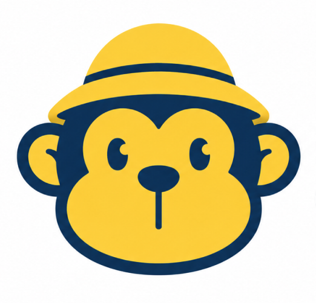

주요 옐로우
Primary YellowHEX · #FFBD4DRGB · 255, 189, 77BRAND SYSTEM · VISUAL IDENTITY

이 로고는 원숭이 캐릭터의 얼굴을 단순화한 심볼로, 친근함과 개성이라는 브랜드 정체성을 표현합니다.
밝은 옐로우는 즐거움과 매력을, 딥 네이비는 신뢰감과 안정성을 상징하며 두 색상의 조합은 밝고 명확한 이미지를 전달합니다. 로고의 비율과 형태는 임의로 변형하지 않습니다.
HEX · #FFBD4DRGB · 255, 189, 77HEX · #183153RGB · 24, 49, 83HEX · #FFFFFFRGB · 255, 255, 255HEX · #1A1A1ARGB · 26, 26, 26HEX · #F04438RGB · 240, 68, 56로고 주변에는 시각적 명확성을 위해 최소 여백을 확보합니다. 기준값 1x는 심볼 모자 높이를 기준으로 하며, 이 영역 안에는 다른 요소를 배치하지 않습니다.
제작물의 해상도와 매체 조건에 따라 심볼마크가 뭉개져 보이지 않도록 최소 크기 규정을 준수합니다.
프리미엄 콘텐츠와 한정 캠페인에는 블랙·화이트·레드 조합을 사용합니다. 기본 실루엣과 여백 규정은 메인 로고와 동일하게 유지합니다.
BLACK #1A1A1A · RED #F04438 · WHITE #FFFFFF
기본 컬러 심볼을 우선 사용합니다.
AA · CLEAR원본 로고 이미지를 그대로 사용합니다.
AAA · STRONG원본 로고 이미지를 그대로 사용합니다.
AA · BRIGHT복잡한 사진 위에서는 로고를 직접 올리지 않습니다. 화이트 또는 네이비 단색 보호 면을 먼저 확보하고, 로고와 배경 사이에 충분한 대비를 유지합니다.
굵은 메시지와 캐릭터를 결합해 피드에서 즉시 인지되는 표지를 구성합니다.
옐로우는 행동 유도, 네이비는 정보 구조에 사용해 명확한 화면을 만듭니다.
심볼 단독 사용과 짧은 문구 조합으로 실물에서도 친근한 인상을 이어갑니다.